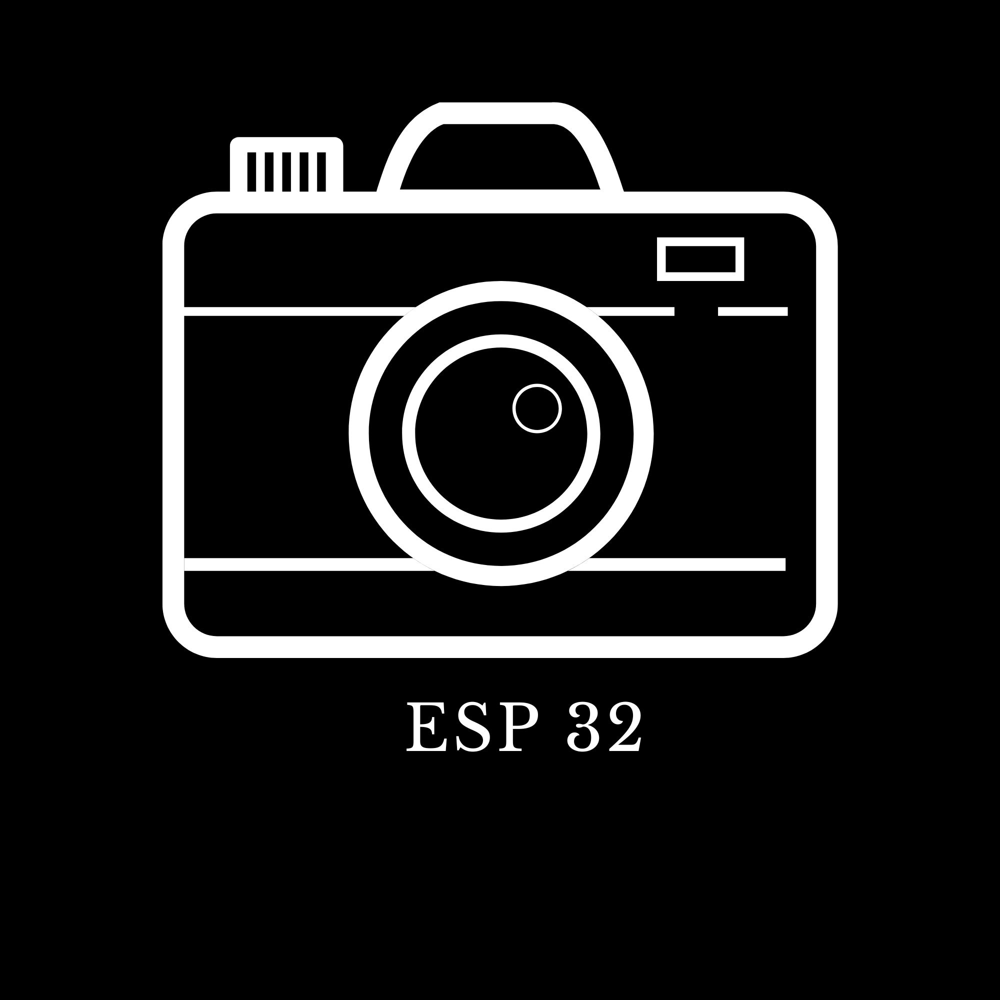

FUNCIONAMIENTO DEL SISTEMA
El sistema estará compuesto por: ESP32-CAM Sensor PIR Fuente de alimentación Conexión WiFi Funcionamiento El sensor PIR detecta movimiento El ESP32 activa la cámara Se captura la imagen Se procesa con IA (detección de rostro) Se envía al usuario vía web o app Flujo del sistema Entrada → Procesamiento → Salida Entrada: sensores Procesamiento: ESP32 + IA Salida: imagen o alerta

SOLUCIONES EXISTENTES
Cámaras comerciales inteligentes Cámaras de seguridad con detección de movimiento y reconocimiento facial Sistemas IoT conectados a la nube Limitaciones: Alto costo Dependencia de internet Problemas de privacidad Sistemas más avanzados Uso de Raspberry Pi con cámaras HD Implementación de modelos complejos con Python y OpenCV Ventaja: mayor potencia Desventaja: mayor costo y consumo energético

DEFINICION DEL PROYECTO
El proyecto consiste en diseñar e implementar una cámara inteligente de bajo costo capaz de capturar imágenes y aplicar funciones básicas de inteligencia artificial, como detección de rostros o movimiento, utilizando el módulo ESP32-CAM. El problema que se busca solucionar es la falta de sistemas de vigilancia accesibles económicamente para hogares, escuelas o pequeños negocios. Muchas soluciones comerciales tienen costos elevados o requieren infraestructura compleja. Por lo tanto, se propone desarrollar un sistema: Económico Fácil de implementar Con capacidades básicas de inteligencia artificial Accesible desde dispositivos móviles o navegador